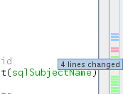

Apache NetBeans
Apache NetBeansUsing ClearCase Support in NetBeans IDE
| This tutorial needs a review. You can edit it in GitHub following these contribution guidelines. |
Using ClearCase Support in NetBeans IDE
The IDE’s ClearCase support is designed to help you perform versioning tasks directly to your project when working in the IDE.
This document guides you through the basic steps involved in using ClearCase in NetBeans IDE.
Rational ClearCase is a version control software tool developed by IBM. ClearCase forms the base of version control for projects of many large and medium-sized businesses.
| To get the NetBeans ClearCase plugin, go to the Plugin Manager in the IDE (Tools > Plugins from the main menu) and install the plugin, as shown below: |
Setting up ClearCase
Before you can take advantage of the IDE’s ClearCase support, you need to have the ClearCase client software installed and running on your computer.
NetBeans ClearCase support works with both snapshot and dynamic views. Views have to be configured externally from the IDE and a connection to a ClearCase server must be properly set up. No extra work is needed to access files in snapshot views. If you want to access files from a dynamic view however, you must first initiate it with the native ClearCase tools installed on your computer.
| Currently it is not possible to connect to a ClearCase Web Interface (CCWeb). |
| A limitation for *nix-like systems is that you have to start the IDE from a dynamic views context to be able to access your files. |
The IDE’s ClearCase support works by interacting with the cleartool client to carry out versioning commands. Depending on your system, and whether you install the cleartool client to a non-default location, you may also need to register the path to the cleartool executable in the IDE.
Specifying the Path to the cleartool Executable
NetBeans IDE automatically tries to identify the location of the cleartool executable file by using the $PATH system variable on your computer. Depending on your platform however, or whether you installed the ClearCase client to a different location, it may be necessary to specify the path to the executable file explicitly. To set the path to the ClearCase executable file in the IDE:
-
Choose Tools > Options (NetBeans > Preferences on Mac) from the main menu. The Options dialog opens.
-
Select the Miscellaneous icon along the top of the dialog, then click the Versioning tab. In the left pane under Versioning Systems, select ClearCase. User-defined options for ClearCase display in the main window of the dialog:
-
In the Specify the
cleartoolExecutable Path text field, either type in the path to the executable file or click Browse to navigate to it on your system. -
Click OK, then restart the IDE to allow changes to take effect.
| For more information see NetBeans ClearCase Integration Setup and Release Notes. |
Starting to Work with Versioned Files
When working with ClearCase in the IDE for the first time, you need to begin by opening an existing versioned project, or by creating a new project within a ClearCase view on your computer.
Opening an Existing Project in the IDE
If you already have a ClearCase versioned project which you have been working with, you can open it in the IDE and versioning features will automatically become available to you. The IDE scans your open projects and if they are located in a ClearCase view directory, file status and context-sensitive support automatically become active.
To open a ClearCase versioned project:
-
Choose File > Open Project from the main menu and work your way through the Open Project wizard. When specifying the project location, navigate to the location within a ClearCase view directory on your computer. When you complete the wizard, the project displays in the Projects window (Ctrl-1), and versioning support becomes active.
| You can also open a project or directory in the Favorites window. This may be necessary if your ClearCase directory is not a NetBeans project. To do so, right-click in the Favorites window (Ctrl-3) and choose Add to Favorites. In the Add to Favorites dialog that displays, navigate to the top-level ClearCase view directory on your computer and click Add. A tree view of the directory is added to the Favorites window. |
Creating a New Project and Placing it under Source Control
Alternately, you can create a new project and place it under ClearCase source control, then continue to work on it in the IDE. When you create a new project, you need to specify its location within a ClearCase view. This allows the IDE to recognize that versioning support is required. When the project is created, all files are initially view-private). You can then add the project to the ClearCase server using the IDE’s Add to Source Control command.
To create a new project:
-
Choose File > New Project from the main menu and work your way through the New Project wizard.
-
In Step 2, Name and Location, select a directory in a ClearCase view.
-
When you click Finish, the project is created and a tree view of its directory is added to the Projects window (Ctrl-1). Upon creation, the IDE automatically recognizes that the project is in a view and all relevant ClearCase actions and file status information become available.
When a versioned project is opened in the IDE, all file and folder names are rendered green, indicating that they have 'new' status. (Any files displayed in grey have 'ignored' status. See Badges and Color Encoding below for more information.) The IDE automatically decides for each versioned project file whether it is a candidate for version control or not (i.e., Source files in packages are usually meant to be versioned, whereas project private files are generally ignored).
Now that your project is created, you can synchronize it with a ClearCase server using the IDE’s Add to Source Control command:
-
Right-click the project node in the Projects window and choose Add to source control. The Add dialog opens listing all new view-private files which are not automatically ignored by the IDE:
-
Type in a message in the Describing Message text area. Alternatively, click the Recent Messages (
 ) icon located in the upper right corner to view and select from a list of messages that you have previously used.
) icon located in the upper right corner to view and select from a list of messages that you have previously used. -
After specifying actions for individual files, click Add. The IDE’s status bar, located in the bottom right of the interface, displays as the Add action takes place. Upon a successful Add, versioning badges disappear in the Projects, Files and Favorites windows, and the color encoding of checked-in files becomes black.
| From the Add dialog, it is possible to specify whether to exclude individual files from the Add action. To do so, click the Action column of a selected file and choose Do not Add from the drop-down list. |
Checking out Sources
Once you have a ClearCase versioned project opened in the IDE, you can begin making changes to sources. Modifying ClearCase versioned files requires them to be checked out or hijacked first. NetBeans ClearCase support provides two ways to achieve this:
-
Manually: Simply right-click a file node and choose ClearCase > Checkout (or ClearCase > Hijack).
-
Using the On Demand Checkout feature: Each time an action occurs that requires a file to be writable, the IDE automatically runs the relevant ClearCase command (e.g. changing file contents in the editor for the first time or running a refactoring action).
The On Demand Checkout feature can be fine-tuned using the On Demand checkout option in ClearCase Options dialog.
Editing Sources
As with any project opened in NetBeans IDE, you can open files in the Source Editor by double-clicking their nodes, as they appear in the IDE’s windows (e.g. Projects (Ctrl-1), Files (Ctrl-2), Favorites (Ctrl-3) windows).
When working with sources in the IDE, there are various UI components at your disposal, which aid in both viewing and operating version control commands:
Viewing Changes in the Source Editor
When you open a versioned file in the IDE’s Source Editor, you can view real-time changes occurring to your file as you modify it against your previously checked-out version from the repository. As you work, the IDE uses color encoding in the Source Editor’s margins to convey the following information:
| Blue ( ) | Indicates lines that have been changed since the earlier version. |
|---|---|
Green ( ) |
Indicates lines that have been added since the earlier version. |
Red ( ) |
Indicates lines that have been removed since the earlier version. |
The Source Editor’s left margin shows changes occurring on a line-by-line basis. When you modify a given line, changes are immediately shown in the left margin.
You can click on a color grouping in the margin to revert the newly made changes. For example, the screen capture below left shows widgets available to you when clicking a red icon, indicating that lines have been removed from your checked out file.
The Source Editor’s right margin provides you with an overview that displays changes made to your file as a whole, from top to bottom. Color encoding is generated immediately when you make changes to your file.
Note that you can click on a specific point within the margin to bring your inline cursor immediately to that location in the file. To view the number of lines affected, hover your mouse over the colored icons in the right margin:
 |
|
Left margin |
Right margin |
Viewing File Status Information
When you are working in the Projects (Ctrl-1), Files (Ctrl-2), Favorites (Ctrl-3), or Versioning windows, the IDE provides several visual features that aid in viewing status information about your files. In the example below, notice how the badge (e.g.  ), color of the file name, and adjacent status label, all coincide with each other to provide you with a simple but effective way to keep track of versioning information on your files:
), color of the file name, and adjacent status label, all coincide with each other to provide you with a simple but effective way to keep track of versioning information on your files:
Badges, color coding, file status labels, and perhaps most importantly, the Versioning window all contribute to your ability to effectively view and manage and versioning information in the IDE.
Badges and Color Coding
Badges are applied to project, folder, and package nodes and inform you of the status of files contained within that node:
The following table displays the color scheme used for badges:
| UI Component | Description |
|---|---|
Blue Badge ( |
Indicates the presence of files or folders that have been checkedout, hijacked or added. For packages, this badge applies only to the package itself and not its subpackages. For projects or folders, the badge indicates changes within that item, or any of the contained subfolders. |
Color coding is applied to file names in order to indicate their current status:
| Color | Example | Description |
|---|---|---|
Blue |
|
Indicates that the file has been checked out. |
Green |
|
Indicates that the file is new and has not been added to source control yet. |
Gray |
|
Indicates that the file is ignored by ClearCase and will not be included in versioning commands (e.g. Add to Source Control or Checkin). Files can only be made to be ignored if they have not yet been versioned. |
Strike-Through |
|
Indicates that the file is excluded from checkin or Add to Source Control operations. Strike-through text only appears in specific locations, such as the Versioning window, checkin dialog and Add to Source Control dialog, when you choose to exclude individual files from an action. Such files are still affected by other ClearCase commands, such as Update. |


File Status Labels
File status labels provide a textual indication of the status of versioned files in the IDE’s windows. By default, the IDE displays status (new, reserved, unreserved, ignored, etc.) information in gray text to the right of files, as they are listed in windows. You can, however, modify this format to suit your own needs. For example, if you want to add version selectors to status labels, do the following:
-
Choose Tools > Options (NetBeans > Preferences on Mac) from the main menu. The Options window opens.
-
Select the Miscellaneous button along the top of the window, then click the Versioning tab beneath it. Make sure ClearCase is selected beneath Versioning Systems in the left panel. (See the above screen capture for reference.)
-
Click the Add Variable button to the right of the status label Format text field. In the Add Variable dialog that displays, select the
{version}variable, then click OK. The version variable is added to the status label Format text field. -
To reformat status labels so that only status and version selector display to the right of files, rearrange the contents of the Status Label Format text field to the following:
[{status}; {version}]Click OK. Status labels now list file status and version selector (where applicable):
File status labels can be toggled on and off by choosing View > Show Versioning Labels from the main menu.
The Versioning Window
The ClearCase Versioning window provides you with a real-time list of all of the changes made to files within a selected folder of your local working copy. It opens by default in the bottom panel of the IDE, listing new, checked out, or hijacked files.
To open the Versioning window, select a versioned file or folder (e.g. from the Projects, Files, or Favorites window) and either choose ClearCase > Show Changes from the right-click menu, or choose Versioning > Show Changes from the main menu. The following window appears in the bottom of the IDE:
By default, the Versioning window displays a list of all files within the selected package or folder that exhibit a noteworthy status (i.e., new, reserved, unreserved, etc.). You can click the column headings above the listed files to sort the files by name, status, location or rule.
The Versioning window toolbar also includes buttons that enable you to invoke the most common ClearCase tasks on all files displayed in the list. The following table lists the ClearCase commands available in the toolbar of the Versioning window:
| Icon | Name | Function |
|---|---|---|
|
Refresh Status |
Refreshes the status of the selected files and folders. Files displayed in the Versioning window can be refreshed to reflect any changes that may have been made externally. |
Diff All |
Opens the Diff Viewer providing you with a side-by-side comparison of your local changes with versions maintained in the repository. |
|
|
Update All |
Updates all selected files. (Applies only to snapshot views.) |
|
checkin All |
Enables you to check in local changes. |


You can access other ClearCase commands in the Versioning window by selecting a table row that corresponds to a file, and choosing a command from the right-click menu:
For example, you can perform the following actions on a file:
* Show Annotations: Displays author and revision number information in the left margin of files opened in the Source Editor. |
* Exclude from Checkin: Allows you to mark the file to be excluded when performing a checkin. |
Comparing File Versions
Comparing file versions is a common task when working with versioned projects. The IDE enables you to compare versions by using the Diff command, which is available from the right-click menu of a selected item (ClearCase > Diff), as well as from the Versioning window. In the Versioning window, you can perform diffs by either double-clicking a listed file, otherwise you can click the Diff All icon () located in the toolbar at the top.
When you perform a diff, a graphical Diff Viewer opens for the selected file(s) in the IDE’s main window. The Diff Viewer displays two copies in side-by-side panels:
The Diff Viewer makes use of the same color encoding used elsewhere to display version control changes. In the screen capture displayed above, the green block indicates content that has been added to the more current version. The red block indicates that content from the earlier version has been removed from the later. Blue indicates that changes have occurred within the highlighted line(s).
Also, when performing a diff on a group of files, such as on a project, package, or folder, or when clicking Diff All (), you can switch between diffs by clicking files listed in the upper region of the Diff Viewer.
The Diff Viewer also provides you with the following functionality:
Make Changes to your checked out file
If you are performing a diff on checked out files, it is possible to make changes directly from within the Diff Viewer. To do so, you can either place your cursor within the right pane of the Diff Viewer and modify your file accordingly, otherwise make use of the inline icons that display adjacent to each highlighted change:
Replace ( ): ): |
Inserts the highlighted text from the previous versions into the checked out version |
|---|---|
Move All (): |
Reverts the file’s checkedout version to the state of the selected previous version |
Remove ( |
Removes the highlighted text from the checked out version so that it mirrors the previous version |

Navigate among Differences between Compared Files
If your diff contains multiple differences, you can navigate among them by using the arrow icons displayed in the toolbar. The arrow icons enable you to view differences as they appear from top to bottom:
Previous ( ): ): |
Goes to previous difference displayed in the diff |
|---|---|
Next ( |
Goes to next difference displayed in the diff |

Checking in Sources
After making changes to sources, you check them in to the repository. The IDE enables you to call the checkin command in the following ways:
-
From the Projects, Files or Favorites windows, right-click new or checked-out items and choose ClearCase > Checkin.
-
From the Versioning window or Diff Viewer, click the Checkin All (
 ) button located in the toolbar.
) button located in the toolbar.
The Checkin dialog opens, listing:
-
all checked-out files
-
all new files, which will be automatically added to source control first (i.e., view-private files which are not yet versioned and are not ignored by the IDE).
From the Checkin dialog, it is possible to specify whether to exclude individual files from the checkin. To do so, click the Checkin Action column of a selected file and choose Exclude from Checkin from the drop-down list.
To perform the checkin:
-
Type in a checkin message in the Checkin Message text area. Alternatively, click the Recent Messages (
) icon located in the upper right corner to view and select from a list of messages that you have previously used. -
After specifying actions for individual files, click Checkin. The IDE executes the checkin. The IDE’s status bar, located in the bottom right of the interface, displays as the checkin action takes place. Upon a successful checkin, versioning badges disappear in the Projects, Files and Favorites windows, and the color encoding of checked-in files returns to black.

{kind=link}
{kind=link}
{kind=link}
{kind=link}
{kind=link}
{kind=link}
{kind=link}
{kind=link}